To switch pages, tap a page tab in the top bar or press number keys 1 to 6 on an external keyboard. While an edit overlay is open, the number keys switch between TRACK 1 to 4 and DRUMS instead. Page switching can be assigned with MIDI Learn. Two-finger swipe for page switching has been removed.
Heading position
The square button at the right end of the top bar moves the heading between corners, in the order top left, top right, bottom left, bottom right. When the heading is at the bottom, the Transport bar moves to the top of the screen.
Project slots
Slot count
26 banks (A to Z), 10 patterns per bank (00 to 09). Slot IDs use the format A-00.
Stored per slot
bank, programs, modulation, PERFORM layout, MASTER FX, per-track AU.
App-wide (not per slot)
INPUT COMP, HUE, CV device binding.
At launch
Restores the last used slot.
Undo
Undo works on whole-bank snapshots, up to 100 steps. Multiple changes within the same tick merge into one step, and a drag merges into one step. MIDI Learn writes, TAP tempo and bank loading do not enter undo.
2. Top Bar
Top bar: on the left the timer (showing 00:06 in the image) with the "Click Twice to Reset" hint, then the MADZINE wordmark, the A-00 slot menu, the FILE menu, the six page tabs (MAIN is the current page), and at the far right the heading corner button.
Timer
Shows "H O N K I" at launch. Starts counting after the first PLAY and its recording confirmation (Y or N), in MM:SS format. Tap twice to reset; the "Click Twice to Reset" hint sits next to it.
MADZINE
Brand text.
A-00 menu
Two-level menu. The first level starts with CLEAR, followed by banks A to Z; the second level is patterns 00 to 09. MIDI Learn can be assigned as "next bank".
CLEAR
If the bank has content, asks "Clear everything?" first. Clears the bank, programs, SWING and TRANSPOSE to 0, modulation, PERFORM layout, MIDI bindings, per-track AU, MASTER FX, CV routing. Keeps INPUT COMP, HUE, CV device and STEREO OUT.
FILE menu
COPY, PASTE, SAVE, LOAD, plus a non-tappable VERSION item (shows the version number). PASTE is only available when the clipboard is not empty.
SAVE
Exports a .honki file. The default file name on iOS is "HONKI slot".
LOAD
Imports a .honki file. Asks "Replace current bank?" "Current changes will be lost." On failure shows "Bank File Error".
Page tabs
Six tabs, see chapter 1.
Corner button
Square button at the right end, showing the current heading corner. Tap to cycle to the next corner.
.honki files
The current file format contains the bank, programs, per-track AU, MASTER FX, modulation and PERFORM layout. Older .honki files and plain bank files can be imported.
3. Transport
Transport bar from left to right: STOP (playing in the image, showing a square icon), MOTION, RESET, BPM 132, TAP, the scale button C Minor, SWING 0 (dimmed), the STYLE menu TECHNO, SETUP, LEARN, UNDO and REDO stacked vertically, and the HUE color circle at the far right.
PLAY / STOP
When recording is not armed, pressing PLAY shows three segments inside the button: Y, REC?, N. They fold away after 5 seconds. Y records and plays, N plays only. While playing the button shows STOP. Can be assigned with MIDI Learn.
Recording stop button
Shown only while recording is armed, as a red-dot capsule button to the left of PLAY. Pressing it shows "STOP RECORDING?" Y / N, which closes after 5 seconds. Stopping produces 9 WAV files, see chapter 14.
MOTION
Toggles MOTION recording. Hold 0.6 seconds to delete all MOTION recordings. Cannot be assigned with MIDI Learn. See chapter 13.
RESET
Available only while playing. Returns the playback position to zero. Can be assigned with MIDI Learn.
BPM
20 to 300. Drag vertically to adjust, tap to type a number. Dimmed to 40% when using an external clock. Can be assigned with MIDI Learn.
TAP
Averages up to 4 taps within a 2-second window. The buffer clears 5 seconds after the last tap. Does not enter undo. Unavailable with an external clock.
SCALE
Two-level menu: the first level is the scale, the second level is the 12 root notes. The button shows the root and scale name. 16 built-in scales: Chromatic, Major, Minor, Penta Major, Penta Minor, Dorian, Phrygian, Lydian, Mixolydian, Locrian, Major Triad, Minor Triad, Blues, Arabic, Japanese, Whole Tone; followed by user scales and USER SCALE EDITOR. The menu marks how well each scale suits the current STYLE with a number of stars.
SWING
Filled horizontal fader, 0 to 100. Double-tap returns to 0.5. Odd steps are delayed by stepDuration x 0.25 x swing. Can be assigned with MIDI Learn.
STYLE
The popover has an AMOUNT knob (0 to 1) and 9 styles in two columns: West African, Afro-Cuban, Brazilian, Balkan, Indian, Gamelan, Electronic, Breakbeat, Techno. Both AMOUNT and the style index can be assigned with MIDI Learn.
SETUP
Opens and closes the SETUP overlay. See chapter 11.
LEARN
Toggles MIDI Learn mode; the text switches between LEARN and LEARNING. Shortcut Cmd+L. Assignable controls show a 4pt outline.
UNDO / REDO
Dimmed to 40% when there is nothing to undo. Shortcuts Cmd+Z and Cmd+Shift+Z. PERFORM layout editing uses its own undo stack.
HUE
"HUE" label and color circle. The popover is titled "ACCENT HUE": drag the outer ring to change the hue, drag the center disc vertically to change the saturation (0 to 2).
USER SCALE EDITOR
CLOSE
Closes the editor sheet.
SCALE NAME
Scale name text field.
Pitch class buttons
12 buttons, 2 rows of 6, relative to the global ROOT. The root is included by default.
Interval summary
Shows the selected intervals; with no pitch class selected it shows "SELECT AT LEAST ONE PITCH CLASS".
SAVE NEW SCALE / SAVE CHANGES
Adds a new scale or saves edits.
CANCEL EDIT
Cancels the current edit.
SAVED USER SCALES
List of saved scales; when empty it shows "No user scales saved yet.". Each entry has SELECT, EDIT, DELETE. Deleting the scale in use returns the global scale to Chromatic.
4. MAIN
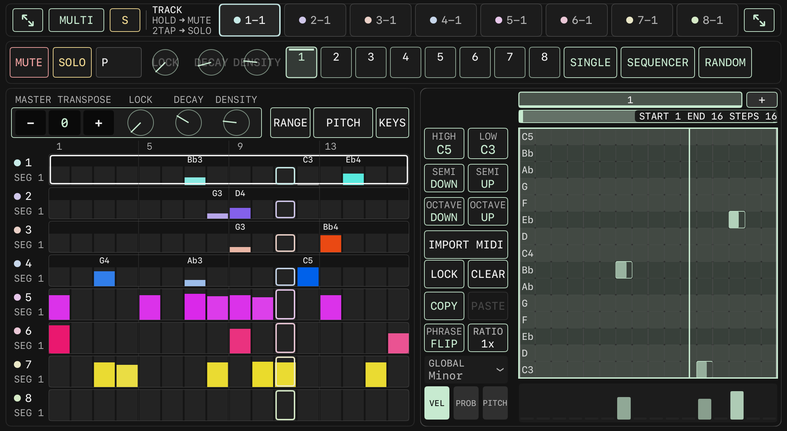
MAIN full page. At the top the track tab row and the parameter row; the left column holds MASTER TRANSPOSE, the MASTER LOCK / DECAY / DENSITY knobs, the RANGE / PITCH / KEYS switch and 8 track bars; on the right the embedded phrase editor with the bar row, the START / END row, HIGH C5 / LOW C3, the SEMI and OCTAVE buttons, IMPORT MIDI, LOCK / CLEAR, COPY / PASTE, PHRASE FLIP and RATIO 1x, the GLOBAL Minor scale menu, the VEL / PROB / PITCH switch and the note grid.
Track tab row
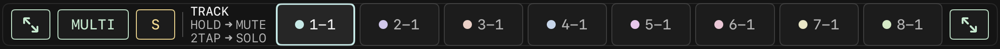
Track tab row: a diagonal-arrow full-screen button at each end, MULTI, S, the hint text (hold to mute, tap twice to solo), and the eight track tabs 1-1 to 8-1 (1-1 is the current track in the image), each with a color dot above it.
Full-screen buttons
One diagonal-arrow button at each end of the row. Opens or closes the editor in full screen.
MULTI
Multi-track synchronized editing. When on, synchronized knobs show a dashed ring.
S
Clears solo on all tracks.
Track tabs
Tap to select a track; tap twice within 0.35 seconds to toggle SOLO; hold 0.45 seconds to toggle MUTE. The tab text is the track number and current segment (for example 1-1).
Parameter row
Parameter row: MUTE, SOLO, P (program menu), the three knobs LOCK / DECAY / DENSITY, segments 1 to 8 (1 is the current segment in the image), and the playback modes SINGLE / SEQUENCER / RANDOM.
MUTE / SOLO
Mute and solo for the current track.
P
Program menu: SAVE, LOAD, CLEAR, for Program 1 to 8.
LOCK
0 to 100%, vertical drag, no double-tap reset.
DECAY
Melodic tracks show 0 to 100% with an internal range of -0.99 to 0.99; drum tracks range 0.2 to 2.0 (1.0 shows as 44%). Double-tap resets (drum tracks 1.0, melodic tracks -0.78).
DENSITY
0 to 100%. Double-tap clears the segment override.
Segments 1 to 8
Three states: missing, empty, filled. Shows a label when a RATIO is set. Chain state is shown as a 3pt bar at the bottom; the playing segment shows a 3pt line at the top. Tap priority: chain setup > RANDOM pool > MULTI > select.
SINGLE
Plays only the current segment, shows SEG n.
SEQUENCER
Tap START, then the start slot, then END, then the end slot; afterwards shows SEQ a-b.
RANDOM
Shows CHOOSE; tap slots to add them to or remove them from the random pool.
FOLLOW
Drum tracks only. Follows the segment of the paired melodic track.
Left column
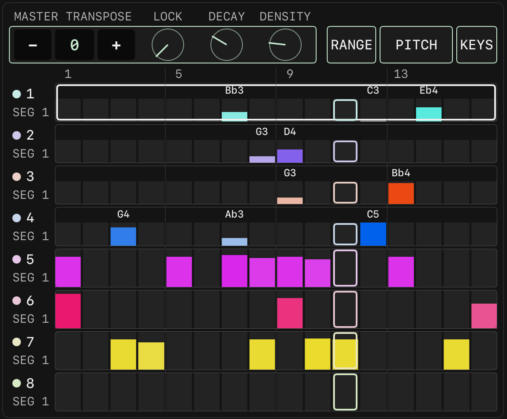
Left column: the -, 0, + buttons of MASTER TRANSPOSE, the MASTER LOCK / DECAY / DENSITY knobs, the RANGE / PITCH / KEYS switch, then the 8 track bars (labeled 1 to 8 and SEG 1), each with the step ticks 1 / 5 / 9 / 13 and note names above it. In the image, track 1 has an outline marking it as the current track, and the vertical outline is the playback position.
MASTER TRANSPOSE
Three buttons -, 0, +, range plus or minus 24 semitones.
MASTER LOCK / DECAY / DENSITY
Writes the corresponding parameter on all 8 tracks at once.
RANGE
Drag the handles at both ends of each track bar to set the start and end of the playback window.
PITCH
Tap a cell to toggle a note (pitch at the middle of the range, velocity 100, gate 0.5); drag vertically to change pitch or velocity; swipe horizontally to paint.
KEYS
Shows the keyboard, see KEYS mode below.
Track bars do not support long press.
Phrase editor (TRACK 1 to 4)
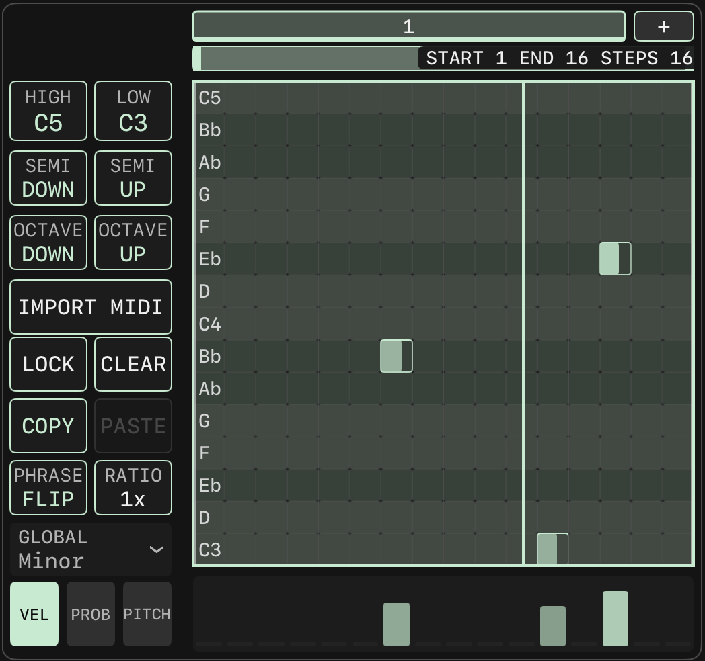
Phrase editor: the bar row at the top ("1" and "+"), below it START 1 END 16 STEPS 16, HIGH C5 / LOW C3, SEMI DOWN / UP, OCTAVE DOWN / UP, IMPORT MIDI, LOCK / CLEAR, COPY / PASTE (PASTE dimmed in the image), PHRASE FLIP, RATIO 1x, the GLOBAL Minor scale menu, VEL (selected) / PROB / PITCH. The note grid rows are the scale notes from C3 to C5; the image shows three notes and the playback position line, with the velocity bars at the bottom.
Bar row
16 steps per page, one bar per page, up to 64 bars. Tap a page number to switch; hold 0.6 seconds to show "DELETE BAR n?" Y / N. "+" adds a bar. Dragging a note to the edge and holding for 300 ms turns the page. The FOLLOW button makes the page follow playback.
START / END
Sets the playback start and end bars, shown as "START n END m STEPS k" plus LENGTH.
HIGH / LOW
Upper and lower pitch limits. Tap to type a note name; drag vertically, one semitone per 24px.
SEMI DOWN / UP
Transposes the whole segment by plus or minus 1 semitone. Unavailable at the limit.
OCTAVE DOWN / UP
Transposes the whole segment by plus or minus 12 semitones. Unavailable at the limit.
IMPORT MIDI
Imports a .mid file. On completion shows "IMPORTED n NOTE(S)", with "SKIPPED m" added when notes were skipped; errors are shown in red. The message disappears after 4 seconds.
LOCK
Toggles lock mode.
CLEAR
Two-stage: shows "CLEAR LOCK?", Y clears all notes including locked ones, N clears only unlocked notes. Cancels automatically after 5 seconds.
COPY
Shows "COPY BAR n OR ALL?"; choose 1 BAR or ALL.
PASTE
Can paste across tracks. The clipboard is kept after pasting.
PHRASE FLIP
Reverses the phrase inside the playback window. Needs at least 2 steps.
Segment scale menu: GLOBAL, built-in scales, user scales, each with 12 roots.
VEL / PROB / PITCH
Switches the bottom lane. VEL shows "VELOCITY n" (1 to 127); PROB shows "PROB nn%" (0 to 100); PITCH shows "PITCH nn%", the random pitch probability.
Note grid gestures
Rows are the scale notes within the pitch range; note width is gate, opacity is velocity.
Notes outside the scale show a 2pt warning outline; locked notes show a 4pt outline.
Tap an empty cell to create a note (velocity 100, gate 0.5); it is locked on creation. Tap a note to delete it; its lock state is kept.
A vertical drag over 8pt changes pitch; a horizontal drag changes gate (0.01 to 16). Up to 4 fingers at once.
Manually entered notes are locked by default and are not affected by the LOCK knob or automatic generation. Locked notes are only cleared by choosing Y after CLEAR.
DRUMS editor (TRACK 5 to 8)
Group order
Top to bottom: TRACK 8 LEAD, 7 TIMELINE, 6 GROOVE, 5 FOUNDATION.
Voice rows
TRACK 5: Kick, Low Tom; TRACK 6: Snare, Mid Tom, Clap; TRACK 7: HH Closed, HH Open; TRACK 8: High Tom, Crash. Names change with the STYLE.
Paging
The four tracks share bar paging.
Left sliders
VARIATION, REST, GHOST, ACCENT, FILL, each 0 to 1, applied to the target tracks.
Target tracks
2x2 grid selecting TRACK 5 to 8, popover titled TARGET TRACK, at least one track stays selected.
LOCK
Toggles lock mode.
CLEAR
Asks WHICH TRACK? (ALL / 8 / 7 / 6 / 5) first, then CLEAR LOCK? Y / N.
COPY / PASTE
Copies and pastes the four tracks as one group.
RATIO
Independent per track, shown as two pairs 5 | 6 and 7 | 8.
VEL / PROB
Drum tracks have only these two lanes.
Style strip
One per group, selecting GLOBAL or a specific style. Can be assigned with MIDI Learn.
Drum grid gestures are the same as the melodic grid.
KEYS mode
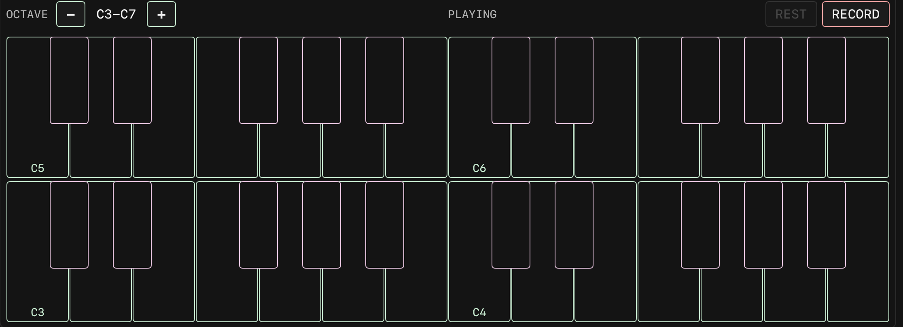
KEYS mode: at the top the OCTAVE - and + buttons with the range C3 to C7, the status text PLAYING, REST (dimmed) and RECORD. Below, two rows of keys, the lower row C3 to C4 and the upper row C5 to C6, with the C keys labeled.
OCTAVE - / +
Moves the octave shown on the keyboard.
Status
STEP n/m, PLAYING, RECORDING, AUDITION.
REST
Enters a rest during step recording.
RECORD
Toggles recording.
Keyboard
Monophonic. Unavailable on drum tracks, which show a hint text.
5. VOICE
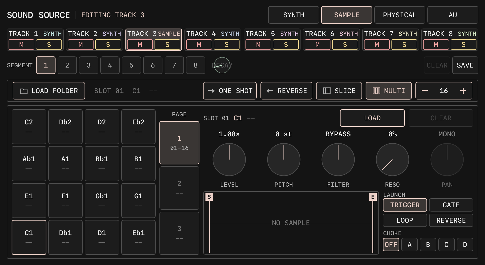
VOICE full page, with TRACK 3 set to the SAMPLE source and MULTI mode on. At the top the header row and the 8 TRACK cells, the SEGMENT row (1 is the current segment), the DECAY knob (dimmed), CLEAR (dimmed) and SAVE. In the middle the file row: LOAD FOLDER, SLOT 01 C1, ONE SHOT, REVERSE, SLICE, MULTI (selected), "- 16 +". Below, the 16 pads (C1 at bottom left), PAGE 1 / 2 / 3, the slot parameter knobs LEVEL / PITCH / FILTER / resonance / PAN, LOAD and CLEAR, the waveform area (NO SAMPLE), LAUNCH with TRIGGER / GATE / LOOP / REVERSE, and CHOKE OFF / A / B / C / D.
Header and track cells
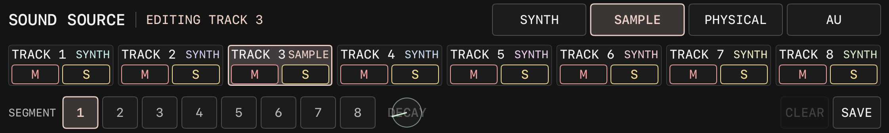
Header: SOUND SOURCE, EDITING TRACK 3, the four source buttons SYNTH / SAMPLE (selected) / PHYSICAL / AU. The second row is the TRACK 1 to 8 cells, each showing the source name and M / S. The third row is SEGMENT 1 to 8, DECAY, CLEAR, SAVE.
Source buttons
SYNTH, SAMPLE, PHYSICAL, AU. One of four.
TRACK cells
Show the track name and source. M mutes; S solos, hold 0.4 seconds for exclusive solo. State is shared with MIXER. When switching tracks, another track in RECORD stops.
SEGMENT 1 to 8
Selects the segment to edit. Segments with a sound memory show a dot.
DECAY
DECAY of the current track, same as on MAIN.
CLEAR
Clears the sound memory of the current segment.
SAVE
Stores the current panel parameters (including the harmonic settings) into the segment memory.
Panel editing rule: when the current segment has a memory, the panel edits the memory; when it has none, the panel edits the track base. Sample loading or recording, the PHYSICAL MODEL and POLYPHONY, and AU loading always apply to the track base. SLICE and MULTI are track-level settings and are mutually exclusive. While editing a segment memory, the panel shows an "EDITING SEGMENT n MEMORY" watermark.
NOTE HARMONIC (sources other than SAMPLE)
HARM
Toggles harmony.
AUTO
Selects the chord type automatically; TYPE is dimmed while on.
TYPE
Tap to cycle the chord type.
VOICE
CLSE, DRP2, DRP3, OPEN.
INV
ROOT, 1ST, 2ND, 3RD.
3RD / 5TH / 7TH
Knobs, each 0 to 1. Can be recorded with MOTION and routed with MOD ROUTE.
SYNTH
TRACK 1 to 5 are wavetable synthesizers, titled "OSCILLATOR WAVETABLE"; TRACK 5 is titled "KICK VOICE WAVETABLE". TRACK 6 to 8 are fixed drum synthesizers; the panel shows "BUILT-IN DRUM SYNTHESIZER WITH FIXED SOUNDS FOR THIS TRACK.".
Oscillator
The carrier oscillator reads the wavetable directly; the PM modulator reads the same frame of the same table. With no wavetable loaded the oscillator runs as a pure sine.
Waveform display
Shows the frame of the current wavetable at the current POSITION. When POSITION is modulated by MOTION, MIDI or PERFORM, the display follows the modulated value in real time.
POSITION
Knob to the right of the waveform display. 0 to 1, default 0. Morph position between frames with linear interpolation: the leftmost position (frame 0) is a pure sine, turning right morphs into the frames of the file. Carrier and modulator follow together. Can be recorded with MOTION. Disabled and dimmed while BYPASS is on or no wavetable is loaded.
BYPASS
TRACK 5 only. While on, FOLD, FEEDBACK, TONE and MODULATION have no effect and the frame size menu is locked.
PREVIOUS / NEXT
Switches to the previous or next wavetable.
Name button
Opens the "SELECT WAVETABLE" popover, with a filter field and a "NO WAVETABLE" entry.
CLEAR
Removes the wavetable; the oscillator returns to a pure sine.
Frame size
Menu labelled "N PTS": 256 / 512 / 1024 / 2048 / 4096, default 2048. Sets the window length used when decoding the file; the table is then resampled to 2048 points per frame. Wavetables with a single cycle shorter than 2048 points need a smaller size to correct the pitch. Changing it reloads the table for that track.
Status text
With no wavetable: "NO WAVETABLE" and that the oscillator runs as a pure sine, with the number of available tables. With a wavetable: table index, frame count, frame size and the current frame (frame 1.0 is the sine).
OCT
-4 to +4.
TUNE
Plus or minus 100 cents.
SWEEP
0 to 1000 Hz; on TRACK 5 an offset of -500 to +500.
FOLD
0 to 10.
FEEDBACK
0 to 1.
TONE
0 to 10.
MODULATION
0 to 10. At 0 the wavetable has no effect.
MOD ENV
0 to 10; on TRACK 5 -5 to +5.
A wavetable holds up to 32 frames including the sine at frame 0; file frames start at 1, and longer files are sampled evenly, always keeping the first and last frame. TRACK 5 follows the STYLE defaults for FOLD, TONE, FEEDBACK and MODULATION until the user touches a parameter.
SAMPLE
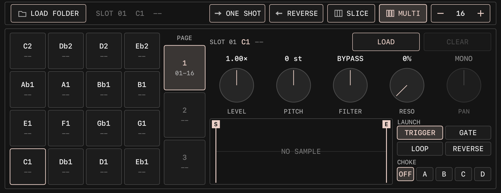
SAMPLE panel in MULTI mode: the file row LOAD FOLDER, SLOT 01 C1, ONE SHOT, REVERSE, SLICE, MULTI (selected), "- 16 +". On the left the 16 pads labeled with note names, C1 (selected) at bottom left; in the middle PAGE 1 (01-16) / 2 / 3; on the right the slot parameters LEVEL 1.00x, PITCH 0 st, FILTER BYPASS, resonance 0%, PAN MONO, LOAD and CLEAR, the waveform area showing NO SAMPLE with the S / E markers, LAUNCH with TRIGGER (selected) / GATE / LOOP / REVERSE, and CHOKE OFF (selected) / A / B / C / D.
File row
LOAD SAMPLE
Loads a single sample (normal and SLICE modes).
RECORD / STOP
Records the master output as a sample, up to 120 seconds, showing "RECORDING x.x s" while recording. Loads automatically after stopping.
File name
Shows the current sample file name, or "NO SAMPLE" when there is none.
LOAD FOLDER
Loads a whole folder in MULTI mode. Supports wav, aif, aiff, mp3, m4a, caf, flac, up to 36 files.
ONE SHOT / LOOP
Switches the playback mode.
REVERSE
Reverse playback.
SLICE
Divides the sample into N equal slices; notes from C1 (24) upward map to the slices. Drum tracks show "DRUM TRACK: SLICE FOLLOWS SETUP MIDI NOTE".
MULTI
Multi-sample pad mode, available on all 8 tracks.
- n +
Slot count in MULTI (1 to 36), slice count in SLICE (2 to 36). Fixed on drum tracks, shown as "PADS n".
Normal and SLICE modes
Waveform
The S / E markers set the start and end points; two fingers can drag both at once. In SLICE mode the slice boundaries are shown. Hold to clear the MOTION of the start and end points.
GRAIN SIZE x DENSITY
Main granular synthesis XY pad. GRAIN SIZE 0.005 to 2 seconds; DENSITY 1 to 200 per second, 1 is normal playback. Each axis has - / + and a lock.
SPRAY x JITTER
Granular synthesis detail XY pad, each 0 to 100%.
GRAIN SHAPE
0 to 100%.
PITCH
Plus or minus 48 semitones.
GAIN
0 to 8.
MULTI mode
Pads
16 per page, up to 3 pages for 36 in total. The first slot is at bottom left. Labels are note names (from C1) or drum voice names. Pressing a pad selects it and auditions it.
Drum track pad count
Fixed: TRACK 5 has 2, 6 has 3, 7 has 2, 8 has 2. The panel shows "PAD PER LANE. SETUP MIDI NOTE NOT USED".
PAGE 1 / 2 / 3
Switches the pad page.
LOAD / CLEAR
Loads or clears the sample of the current slot.
LEVEL
0 to 2.
PITCH
Plus or minus 24 semitones.
FILTER
BYPASS, LP n%, HP n%.
RESO knob
To the right of FILTER, 0 to 100%.
PAN
TRACK 1 to 4 show MONO.
Waveform
Shown per slot.
LAUNCH
TRIGGER, GATE, LOOP, REVERSE; drum tracks have only TRIGGER and REVERSE.
CHOKE
OFF, A, B, C, D.
Pad parameters do not support MOTION or MIDI Learn.
PHYSICAL
XY 1
BRIGHTNESS x DAMPING, each 0 to 100%, with - / + and axis locks.
XY 2
POSITION x STRUCTURE, each 0 to 100%, with - / + and axis locks.
MODEL
MODAL, SYM STR, STRING, FM, QUANT, STR&REV.
POLYPHONY
1 / 2 / 4 VOICE.
OCT
Octave.
TUNE
Fine tune, double-tap returns to 0.
EXT to AUDIO IN
ON / OFF, default ON: the external input excites the resonator and is not mixed in dry.
AU
Not loaded
Shows "NO INSTRUMENT LOADED" and LOAD.
Loading
Shows "LOADING" and CANCEL.
Loaded
Shows the name with CHANGE, OPEN EDITOR, UNLOAD.
OPEN EDITOR
Opens the AU's own interface in full screen, with CLOSE at the top.
List popover
Titled "INSTALLED AUDIO UNIT INSTRUMENTS", grouped by vendor, with FILTER BY NAME at the top.
The AU runs in a separate process and is silent until loading completes.
MACRO KNOBS 1 to 8
Arranged 4x2. Hold 0.6 seconds or tap an unbound knob to start binding; tap the name to open the "MACRO n PARAMETER" popover, which contains CLEAR BINDING. Unbound knobs show ASSIGN PARAMETER; when binding is not possible they show UNAVAILABLE. Bindings are stored in the bank and can be PERFORM targets.
GLIDE
Sends CC5 and CC65.
MOD
Sends CC1.
SUSTAIN
Sends CC64.
The GLIDE, MOD and SUSTAIN values are kept only for the current session. They can be assigned with MIDI Learn.
6. MIXER
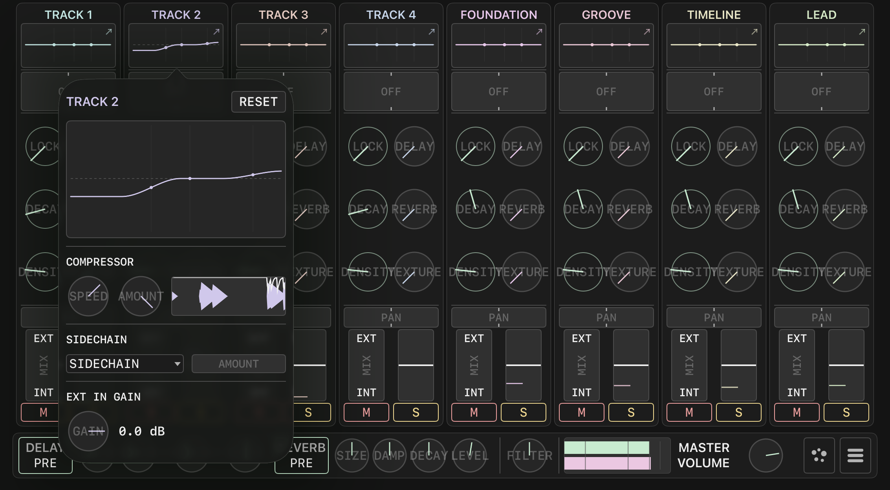
MIXER full page. The eight strips from left to right are TRACK 1 to 4, FOUNDATION, GROOVE, TIMELINE, LEAD; in the image the EQ popover of TRACK 2 is open and covers part of TRACK 1 to 3. At the bottom the EFFECT row: DELAY PRE, REVERB PRE, SIZE / DAMP / DECAY / LEVEL, FILTER, the L / R meters, MASTER VOLUME, the dot icon and the three-line icon.
Strip
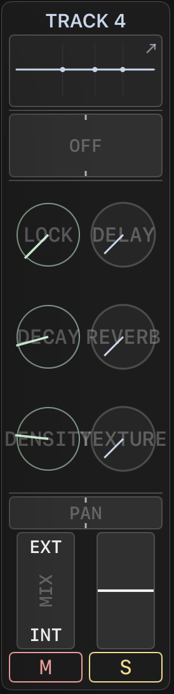
The TRACK 4 strip, top to bottom: name, EQ thumbnail, FILTER bar (OFF), the six knobs LOCK / DELAY, DECAY / REVERB, DENSITY / TEXTURE, the PAN bar, the MIX (EXT / INT) vertical fader and the LEVEL vertical fader, M / S.
Name
TRACK 1 to 4; drum tracks are FOUNDATION, GROOVE, TIMELINE, LEAD.
EQ thumbnail
Shows the EQ curve. Tap to open the EQ popover.
FILTER
OFF at center, low-pass to the left (20 kHz down to 80 Hz), high-pass to the right (20 Hz up to 8 kHz). Snaps within 0.04 of center; double-tap returns to 0.
LOCK / DECAY / DENSITY
Same as the parameters of the same name on MAIN.
DELAY / REVERB / TEXTURE
The three effect send amounts, each 0 to 1, double-tap returns to 0.5.
PAN
Equal-power panning on TRACK 1 to 4, left/right balance on 5 to 8. Snaps at center; double-tap returns to 0.
MIX
Crossfade between EXT and INT; 0 is INT.
LEVEL
0 to 2, default 1. The two meters next to it are pre-fader and post-fader; their source is the trigger envelope, not the audio.
BUS
Four buttons in the lower half of the knob area: MASTER, A1, A2, A3. Selects which bus the LEVEL fader edits; the selected button is filled in the track color. With MASTER selected, LEVEL is the track fader. With A1 to A3 selected, LEVEL sets that track's send level to the aux bus (0 to 2, default 0, mono, taken after the compressor and sidechain stage and before the fader and PAN, not passing through the effect returns or the master section); PAN and MIX are disabled and dimmed, M / S stay active. The selection is not saved and returns to MASTER when the app restarts. Aux levels can be recorded with MOTION and assigned with MIDI Learn.
A1 / A2 / A3 output
Each aux bus is sent to a physical output channel through the CV interface. The channel is assigned on the SETUP page in the AUX OUT rows below MAIN OUT, one menu per bus; OFF when unassigned, and channels already used elsewhere cannot be selected.
M / S
M in red is mute; S in yellow is solo, hold 0.4 seconds for exclusive solo.
The TRACK 2 EQ popover: the title TRACK 2 with RESET, the three-point EQ curve, the COMPRESSOR SPEED / AMOUNT knobs with the compression display, the SIDECHAIN drop-down with the AMOUNT bar, and the EXT IN GAIN knob (0.0 dB).
RESET
Gain returns to 1.0, frequencies to 200 / 1000 / 4000 Hz.
EQ curve
Three points: LOW 40 to 500 Hz, MID 200 to 5000 Hz, HIGH 1000 to 16000 Hz. Gain 0 to 2. Up to 3 fingers can drag at once.
COMPRESSOR SPEED
0 to 1, default 0.5.
COMPRESSOR AMOUNT
0 to 1, default 0.
SIDECHAIN
Sidechain source drop-down; any of the other 7 tracks.
SIDECHAIN AMOUNT
Sidechain compression amount.
EXT IN GAIN
External input gain, -60 to +12 dB.
EFFECT row
DELAY PRE / POST
Switches the delay send point.
DELAY LEFT / RIGHT
The left half is free time from 5 ms to 5 seconds; the right half is 16 tempo-synced values (1/1 to 1/32, including dotted and triplet).
DELAY FEEDBACK
0 to 0.95, default 0.35.
DELAY LEVEL
0 to 1.5, default 0.8.
REVERB PRE / POST
Switches the reverb send point.
SIZE / DAMP / DECAY
Each 0 to 1, default 0.5.
REVERB LEVEL
0 to 1.5, default 0.8.
FILTER
Master output filter knob.
Meters
L / R, two-color, -60 to 0 dBFS, peak hold 0.8 seconds.
MASTER VOLUME
0 to 1.
Dot icon
Opens the TEXTURE panel. Shown in the accent color when any track's TEXTURE send is above 0.
Three-line icon
Opens MASTER FX.
TEXTURE panel
FREEZE
ON / OFF.
SEND
PRE / POST.
RETURN
0 to 100%, default 0.8.
POSITION x SIZE
XY pad.
DENSITY x TEXTURE
XY pad. DENSITY between 0.47 and 0.53 is the SILENT zone.
SPREAD
Spread.
PITCH
Plus or minus 24 semitones.
FEEDBACK / REVERB
Feedback and reverb amounts.
MASTER FX
Title
Shows "N EFFECTS". With no effects an empty-state hint is shown.
Effect slots
Each slot has bypass, name, OPEN, move up, move down and remove X. Up to 5.
ADD EFFECT
Lists the available Audio Unit effects grouped by vendor.
7. UTILITY
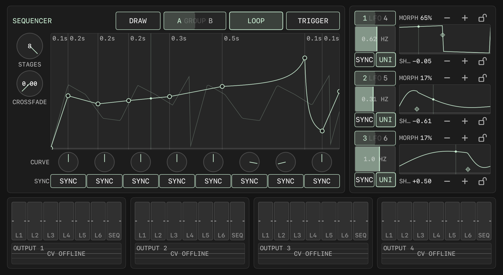
UTILITY full page. Top left is the SEQUENCER: DRAW set into the notch at the panel corner, then A GROUP B, LOOP (on), TRIGGER, the STAGES knob (8) and the CROSSFADE knob (0.00), the envelope editing area with stage time labels and three curves, and below it the eight CURVE knobs and eight SYNC buttons. Top right is the LFO column: three slots 1 LFO 4, 2 LFO 5, 3 LFO 6, each with an HZ fader, SYNC / UNI, the MORPH and SHAPE values with - / + and lock icons, and the waveform display. At the bottom OUTPUT 1 to 4, each with the seven faders L1 to L6 and SEQ and a scope area, showing CV OFFLINE in the image.
SEQUENCER (8-stage envelope)
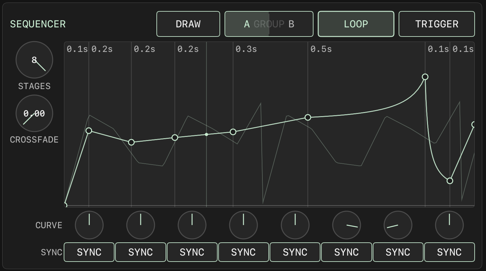
SEQUENCER area: DRAW in the notch at the panel corner, the top row A GROUP B, LOOP, TRIGGER; on the left STAGES 8 and CROSSFADE 0.00; the top edge of the editing area labels each stage time (0.1s, 0.2s and so on), the solid line is the group being edited and the thin line is the other group; below, the eight CURVE knobs and eight SYNC buttons.
DRAW
Page-wide toggle set into the top-left corner of the SEQUENCER panel. Press to turn on; the button then reads FINISH. Drawing mode does not end by itself after a stroke; it stays on until you press FINISH, and it is not kept when you leave the page. While on, you can draw freehand in the SEQUENCER curve area (sampled at the 8 breakpoint positions; stages the stroke did not reach keep their old level) and also draw waveforms on the three LFO pads.
A GROUP B
Switches the editing group between A and B. STAGES, START, LOOP and TRIGGER are shared by both groups; the curve, CURVE and SYNC are independent per group.
LOOP
Loop playback. When off, holds at the level of the last stage.
TRIGGER
Trigger mode.
STAGES
Stage count 1 to 8.
CROSSFADE
0 to 1, the blend between A and B.
Editing area
The horizontal axis is time proportion, the vertical axis is 0 to 10 V. Drag a breakpoint vertically to change LEVEL, horizontally to change DURATION (0.001 to 10 seconds; the last stage can extend to 600 seconds). The start handle is at the far left. Up to 4 fingers at once. Shows the editing group as a solid line, the other group as a thin line, the blended result as a thick line, and the playback position.
CURVE
Eight knobs, each -1 to +1, double-tap returns to 0. Stages beyond STAGES are shown at 0.55 opacity and can still be adjusted.
SYNC
Eight buttons that switch a stage length to tempo sync, with 17 ratios from 1/16 to 16.
LFO
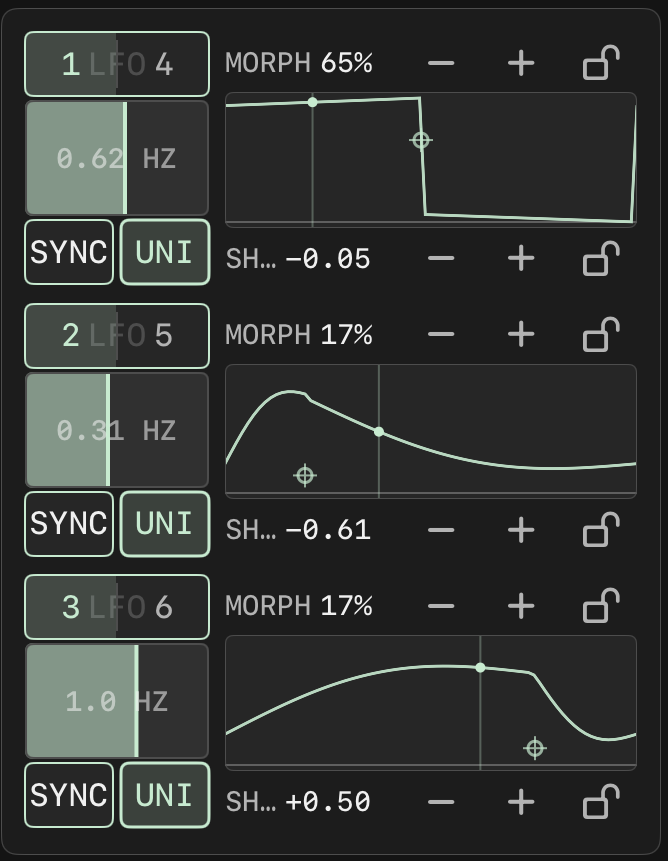
The three LFO slots: 1 LFO 4 (0.62 HZ), 2 LFO 5 (0.31 HZ), 3 LFO 6 (1.0 HZ). Each slot has an HZ fader, the SYNC / UNI buttons, the MORPH percentage and SH value (each with - / + and a lock icon), the waveform display and the playback position.
Slot buttons
The three slots switch between LFO 1 / 4, 2 / 5 and 3 / 6. LFOs not shown keep running.
HZ
0.01 to 20 Hz, logarithmic, double-tap returns to 1 Hz. Can be recorded with MOTION.
SYNC
Tempo sync, 11 divisions from /16 to x16.
UNI / BI
Unipolar or bipolar output.
MORPH
0 to 100%, - / + step by 1%.
SHAPE
-1 to +1, step 0.02.
Lock icon
Locks that axis.
XY pad
SHAPE horizontally, MORPH vertically. Double-tap resets to MORPH 0.5, SHAPE 0. The waveform display draws 72 points and the playback position, showing the actual modulated values.
Drawn waveform
With DRAW on, draw one stroke on the pad; lifting your finger writes it as that LFO's 128-point custom waveform (left to right is one cycle, top is +1, bottom is -1; gaps between drawn points are interpolated, the ends are extended with the nearest drawn value). Only the LFO currently shown in a slot can be drawn. With a custom waveform the LFO reads the table by phase, MORPH and SHAPE have no effect on the output, XY dragging is disabled, no crosshair is shown, and the display shows the custom waveform. The waveform is saved with the modulation settings.
S&H / T&H
With a custom waveform, the top row becomes a mode button and a step count. Tap the button to switch between S&H and T&H (default S&H); - / + change the step count by 1, from 0 to 32, and 0 shows OFF meaning no sample and hold. S&H holds the value read at the start of each step; T&H follows the waveform for the first half of each step and holds the mid-step value for the second half. Neither changes the drawn waveform itself.
RESET
With a custom waveform, the bottom row becomes RESET. Clears the custom waveform, returns the rows to MORPH / SHAPE and re-enables XY dragging. The step count and the S&H / T&H setting are kept.
OUTPUT 1 to 4
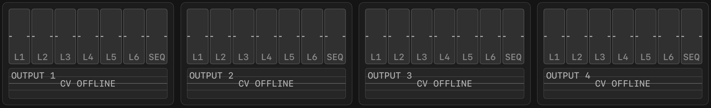
OUTPUT 1 to 4, each with seven faders (L1 to L6 and SEQ) and a scope area below. In the image the CV engine is not running and the scope area shows CV OFFLINE.
Faders
Order L1, L2, L3, SEQ, L4, L5, L6, each -1 to +1, snapping at center, double-tap returns to 0.
Scope area
Shows the output waveform and reading within plus or minus 10 V. Shows "CV OFFLINE" when the CV engine is not running; shows a flat 0 V line when no channel is assigned.
Output ranges
Matrix plus or minus 10 V, SEQ 0 to 10 V, LFO plus or minus 5 V.
The iPad CV engine must be enabled in SETUP. The physical channel of each OUTPUT is assigned in the MOD OUTPUT section of SETUP.
8. PERFORM
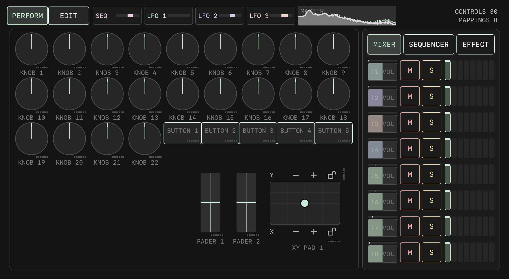
PERFORM full page. The toolbar at the top: PERFORM (selected) / EDIT, the SEQ and LFO 1 to 3 level bars, the MASTER spectrum, CONTROLS 30 / MAPPINGS 0. The canvas holds KNOB 1 to 22, BUTTON 1 to 5, FADER 1 and 2, XY PAD 1 (with - / + and lock icons for X and Y). The side panel on the right is MIXER (selected) / SEQUENCER / EFFECT; MIXER shows VOL, M, S, meters and send cells for T1 to T8.
Toolbar
Toolbar: the PERFORM / EDIT switch, the SEQ, LFO 1, LFO 2, LFO 3 level bars, the MASTER spectrum, and CONTROLS 30 with MAPPINGS 0 at the right end.
PERFORM / EDIT
Switches between performance mode and edit mode.
SEQ, LFO 1 to 3
Live levels of the modulation sources.
MASTER
Master output spectrum.
CONTROLS / MAPPINGS
Number of controls on the canvas and number of mappings.
Controls
KNOB
22 by default.
BUTTON
5 by default, LATCH or MOMENTARY.
FADER
2 by default, VERTICAL or HORIZONTAL.
XY PAD
1 by default, with spring return. X and Y each have - / + buttons and a lock icon; a locked axis does not spring back. In MIDI Learn mode the four corners can be assigned separately.
Indicator dots
The number of small dots under each control is its mapping count, up to 8.
The canvas snaps to a grid. With no controls, an empty-state hint is shown.
Side panel
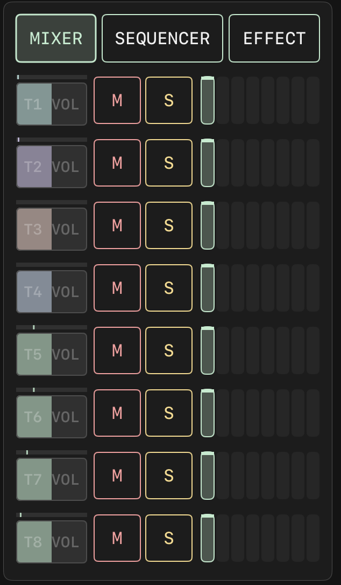
Side panel MIXER page: each row T1 to T8 has a VOL fader, M, S, a vertical meter and a row of send cells.
MIXER
VOL (0 to 2), M, S, meter and send cells for T1 to T8. VOL and the send cells support long press for MOD ROUTE.
SEQUENCER
Segment bars with the playback position; the LFO rows have RATE and a SHAPE / MORPH XY pad, and the XY pad supports long press for MOD ROUTE.
EFFECT
DELAY, REVERB, TEXTURE parameters.
EDIT mode
+ KNOB / + BUTTON / + FADER / + XY PAD
Adds a control.
DELETE
Deletes the selected control.
UNDO / REDO
Layout editing only, 32 steps.
TEMPLATE
Built-in layouts, SAVE, user layouts; MANAGE renames or deletes.
MAPPING
Opens the mapping overlay.
Drag
Moves a control.
MAPPING overlay
Header
Control name and close button. BUTTON has LATCH / MOMENTARY; FADER has VERTICAL / HORIZONTAL; XY PAD has separate X and Y slot groups.
Mapping slots
8 per control (or per axis). Each slot shows the target name and a range bar (inverted when the minimum is above the maximum), plus a bar for the current effective value.
Mappings have no modulation amount field; the amount is set in MOD ROUTE. MOD ROUTE for PERFORM controls offers only 7 sources, SEQ and LFO 1 to 6; ENV is not available. All four control types can be assigned with MIDI Learn; the label shows the CC number, N number or PB, and takeover uses pickup.
9. MOD ROUTE (long-press modulation)
MOD ROUTE lets one parameter receive several modulation sources at once. Priority: touch is highest, then MOTION playback, then MOD ROUTE. MOD ROUTE keeps working while playback is stopped.
Where long press works
PERFORM canvas controls, VOL and send cells on the MIXER side panel, the LFO XY pad on the SEQUENCER side panel.
LFO rate and XY pads on UTILITY.
DELAY / REVERB knobs, the granular synthesis pads and the bars on MIXER.
Sample parameters and DECAY on VOICE.
Parameter bars on VISUAL.
Gesture: hold 0.6 seconds without moving more than 8pt; haptic feedback confirms success.
Panel
Title
MOD ROUTE; XY pads add the axis name.
Source buttons
16 in four rows: OFF, SEQ, LFO 1 to 6, ENV 1 to 8. OFF clears everything.
Button logic
Tap a selected source with a non-zero amount: deselect. Tap a selected source with amount 0: set to +50%. Tap an unselected source with a non-zero amount: select. Tap an unselected source with amount 0: select and set to +50%.
AMOUNT
-100 to +100%. The title shows "source name AMOUNT", or "SELECT A SOURCE" when no source is selected.
CLEAR MOTION?
A Y / N row shown when the parameter has a MOTION recording.
Closing
Only by tapping outside the panel or answering Y / N.
Sources
SEQ
UTILITY envelope output, 0 to 1.
LFO 1 to 6
Unipolar or bipolar according to the UNI / BI setting.
ENV 1 to 8
The envelope of TRACK 1 to 8, 0 to 1, read from the track's current source: the SYNTH voice envelope, the SAMPLE player envelope, or the track envelope for PHYSICAL and AU. A track's own parameters may be modulated by its own envelope. ENV is only a MOD ROUTE source, not a column of the UTILITY output matrix. Not available on PERFORM controls, where the buttons are dimmed.
Source markers
Position
Top right corner of the control, 14 pt monospace on a backing plate. XY pads list the X axis first, then Y.
Characters
m: the parameter has a MOTION lane. s: SEQ. 1 to 6: LFO 1 to 6. e1 to e8: ENV 1 to 8 (two characters).
Overflow
When the markers do not fit, the list is truncated with "+"; when even that does not fit, a 5 pt square is shown instead.
Relation to MIDI Learn
While MIDI Learn mode is on, long press does not open MOD ROUTE.
MIDI bindings can only be removed in SETUP; learning again replaces the old binding.
10. VISUAL
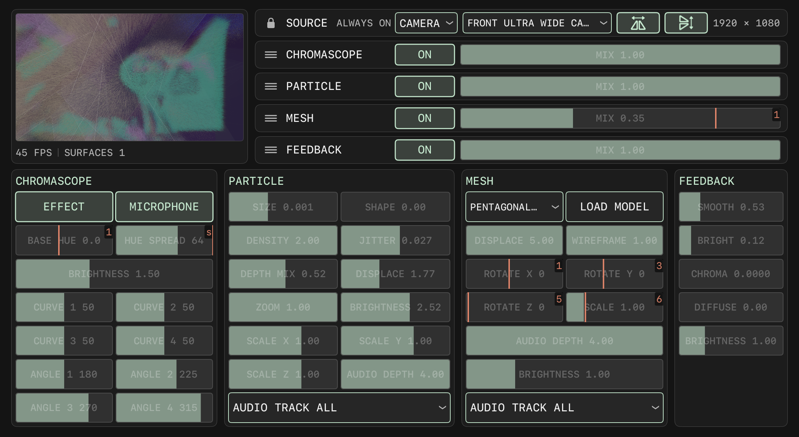
VISUAL full page. Top left is the 16:9 preview with the status line (45 FPS, SURFACES 1). Top right is the SOURCE row (lock icon, ALWAYS ON, the CAMERA menu, FRONT ULTRA WIDE CAMERA, the two flip buttons, 1920 x 1080) and the four stations CHROMASCOPE, PARTICLE, MESH, FEEDBACK, each with a drag handle, an ON button and a MIX bar (MESH at 0.35 with a modulation marker in the image). Below, the four parameter panels.
SOURCE row and station rows
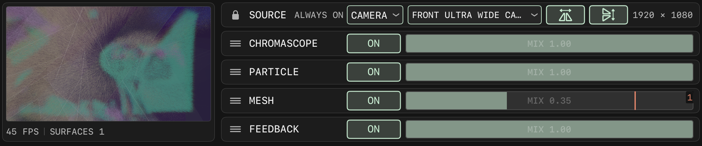
SOURCE row: lock icon, SOURCE, ALWAYS ON, the CAMERA drop-down, the lens menu, the horizontal and vertical flip buttons, the resolution 1920 x 1080. The four rows below are CHROMASCOPE, PARTICLE, MESH, FEEDBACK, each with a handle, ON and a MIX bar.
SOURCE / ALWAYS ON
Source status text.
Source menu
CAMERA, PHOTO, VIDEO.
Lens menu
Selects the camera device; shows NO CAMERA FOUND when there is none. The camera runs at 1080p 30 fps; the front camera is mirrored.
PHOTOS / FILES
Shown for the PHOTO and VIDEO sources; loads from the photo library or from files. After loading the file name is shown; on failure LOAD FAILED. Photos are limited to 1920 on the long edge; videos loop and are muted.
FLIP H / FLIP V
Horizontal and vertical flip.
Resolution
Shows the source resolution; shows SOURCE WAITING while not ready.
Station rows
The four stations CHROMASCOPE, PARTICLE, MESH, FEEDBACK; drag the handle on the left to reorder. ON / OFF toggle; only CHROMASCOPE is on by default. With all stations off, the raw source is output.
MIX
0 to 1, default 0.75 for CHROMASCOPE and 1 for the others. The modulation source marker is shown at the top right.
Status line
NN FPS, SURFACES n, EXTERNAL DISPLAY, RENDERER OFFLINE.
VISUAL parameter values are not stored with the bank; only the MOD ROUTE routings are stored in the bank.
Parameter panels
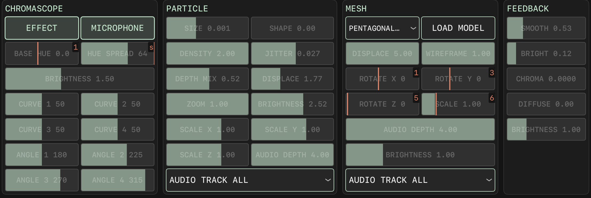
The four parameter panels. CHROMASCOPE: EFFECT / MICROPHONE, BASE HUE, HUE SPREAD, BRIGHTNESS, CURVE 1 to 4, ANGLE 1 to 4. PARTICLE: SIZE, SHAPE, DENSITY, JITTER, DEPTH MIX, DISPLACE, ZOOM, BRIGHTNESS, SCALE X / Y / Z, AUDIO DEPTH, AUDIO TRACK ALL. MESH: the model menu (PENTAGONAL), LOAD MODEL, DISPLACE, WIREFRAME, ROTATE X / Y / Z, SCALE, AUDIO DEPTH, BRIGHTNESS, AUDIO TRACK ALL. FEEDBACK: SMOOTH, BRIGHT, CHROMA, DIFFUSE, BRIGHTNESS. Some bars show a modulation source marker at the top right.
CHROMASCOPE
EFFECT
Effect on/off.
MICROPHONE
Drives the image with the master output audio (L / R / mid / side).
BASE HUE
0 to 333, default 166.5.
HUE SPREAD
0 to 100, default 50.
BRIGHTNESS
0 to 4.
CURVE 1 to 4
Each 0 to 100.
ANGLE 1 to 4
Each 0 to 360.
PARTICLE
SIZE
0.001 to 1.
SHAPE
0 to 1, in order circle, square, triangle, hexagon, diamond, star, ring; 1 is random. Cannot be routed with MOD ROUTE.
DENSITY
0.01 to 2.
JITTER
0 to 0.05.
DEPTH MIX
0 to 1.
DISPLACE
0 to 5.
ZOOM
-1 to +1.
BRIGHTNESS
0 to 4.
SCALE X / Y / Z
Each -3 to +3.
AUDIO DEPTH
0 to 4; the displacement is multiplied by (1 + level x depth).
AUDIO TRACK
ALL or TRACK 1 to 8.
MESH
Model menu
100 built-in models with thumbnails; default is the sphere.
LOAD MODEL
Loads an .obj file.
DISPLACE
0 to 5.
WIREFRAME
0 to 1.
ROTATE X / Y / Z
Each 0 to 360.
SCALE
0.1 to 5.
AUDIO DEPTH / BRIGHTNESS / AUDIO TRACK
Same as PARTICLE.
FEEDBACK
SMOOTH
Smoothing amount.
BRIGHT
Brightness decay.
CHROMA
0 to 0.005.
DIFFUSE
Diffusion amount.
BRIGHTNESS
Output brightness.
Audio drive and modulation
The audio source is the RMS of the 8 tracks at the mixer input point, multiplied by VOL, with mute and solo applied.
39 parameters in total can be routed with MOD ROUTE. Not modulatable: station on/off and order, AUDIO TRACK, SHAPE, the MESH model.
MIDI writes the base value.
External display
When connected through USB-C or AirPlay mirroring, the external display shows the video output. You do not need to stay on the VISUAL page.
File and photo pickers still appear on the iPad.
The system asks for camera permission the first time the camera is used.
11. SETUP
SETUP is a full-screen overlay that scrolls vertically, with index buttons at the top that jump to each section. The sections are in the following order.
CURRENTLY LEARNING
Shows the pending MIDI Learn target.
MIDI INPUT DEVICES
List of MIDI input devices.
MIDI BINDINGS
List of bindings. Each entry can set MODE (LATCH / MOMENTARY), TAKEOVER (JUMP / PICKUP), SCALE (LINEAR / EXP / LOG), MIN and MAX (0 to 100%, in 10% steps). Entries can be deleted individually or all at once.
RECORDING LOCATION
Fixed at Documents/Recordings; the Files app path is "On My iPad / HONKI / Recordings".
DIAGNOSTICS
Diagnostics section.
AUDIO DEVICE
System audio route picker.
MIDI OUTPUT DEVICE
MIDI output device.
EXTERNAL INPUT
Assigns an external input channel (Channel n) or OFF per track.
EXTERNAL CLOCK
CLOCK SOURCE: INT / MIDI / CV. DIV/MULT: /4, /2, x1, x2, x4. BPM 20 to 300. MIDI clock is 24 PPQN; 2 seconds without a signal counts as a dropout. CV INPUT selects the channel. STATUS shows the state. CLOCK OUT and MIDI CLOCK OUT are ON / OFF.
MOD OUTPUT
Assigns the physical channel of each UTILITY OUTPUT; a channel conflict is set to OFF automatically.
MAIN OUT
Master output channels.
SAMPLE RATE
Sample rate.
INPUT COMP
Input latency compensation, 0 to 250 ms in 0.1 ms steps. Drag to adjust, tap to type a number, hold the plus or minus buttons for continuous adjustment.
BUCHLA PULSE
Pulse output setting.
ENV DELAY
Envelope delay setting.
CV/MIDI ROUTING
8 track slots, each with a CV channel and a MIDI channel (channels cannot repeat), VOLTS, drum track note number, CC 0 to 127. Has CLEAR ALL, RESET and the CV device picker; choosing a device starts the CV engine automatically.
PARALLEL OUT
Assigns a parallel output channel or OFF per track.
GENERATE VELOCITY
Generated velocity setting.
12. MIDI Learn
Entering and leaving
Press LEARN on the Transport bar or Cmd+L to enter. Assignable controls show an outline; XY pads show four corners.
Press LEARN again or ESC to leave.
Procedure
Tap a control to enter the waiting state; CURRENTLY LEARNING in SETUP shows the target.
Send a MIDI message within 10 seconds. Tapping another control switches the target.
The first matching message completes the binding: buttons are MOMENTARY, everything else is continuous, and the curve defaults to LINEAR. An existing binding is replaced.
Message types
Bindable
CC, Note, Pitch Bend.
Not bindable
Program Change. Aftertouch and SysEx are ignored.
Binding behavior
MODE
LATCH or MOMENTARY.
TAKEOVER
JUMP jumps straight to the new value; PICKUP takes over only after passing the current value.
SCALE
LINEAR, EXP, LOG.
MIN / MAX
Mapping range.
Page switching
Each of the six pages can bind one message.
Bindings are stored in midi_mappings.json, with a .bak backup kept alongside. Each parameter can have only one binding.
13. Motion
Enable
Press MOTION on the Transport bar.
Recording condition
Recorded only when all three hold: MOTION is on, playback is running, and a finger is on the control.
Playback
Manual operation takes precedence; on release the control returns to the recorded value.
Write timing
Written when MOTION is turned off or playback stops.
Sample rate
30 Hz, sample-and-hold.
Lane length
Track parameters: one 64-cell lane per segment. Effect and VISUAL parameters: a global 4-bar lane.
Recordable
Mixer, DECAY, harmony, sound source parameters (kick, sample, PHYSICAL; not AU tracks), effects, VISUAL, PERFORM controls.
Hold 0.6 seconds and answer CLEAR MOTION? Y / N in the MOD ROUTE panel.
Clear all
Hold MOTION on the Transport bar for 0.6 seconds.
Indicator
Controls with a recording show an indicator line.
Storage
Stored with the bank; can be undone.
14. Recording
Stem recording
Start
Press PLAY and choose Y from Y / REC? / N.
Stop
Press the red-dot recording stop button and answer Y. Going to the background stops the recording; changing the sample rate starts a new session; returning to the foreground uses a new folder.
Files
9 WAV files (32-bit float): track1 to track4 mono, track5 to track8 stereo, master stereo. Tracks with an external input routed also get trackN_ext.wav. The tap point is post-fader.
Location
Recordings/Sessions/date-time/. On iPad, retrieve them from the Files app at On My iPad / HONKI / Recordings.
Header
Updated every 100 ms; the file stays readable after an interruption.